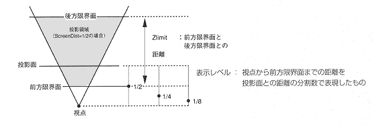

Return to previous page | Return to menu | Go to next page
void
Graphic function
Specify display level
void slZdspLevel(level)
Uint16 level ;
level Display level 1: Displays the back from 1/2 2 ： Displays from 1/4 3: Displays from 1/8 onwards Note: Refer to the figure below for the display level.
Specify how far before the projection plane is actually projected onto the projection plane (front limit plane).
This is illustrated below.
None
The distance from the front limit surface to the rear limit surface is called “Zlimit”.
“Zlimit” is specified by the function “slWindow”.
The display level is set to “1/2” when the system is initialized.

Reference: Chapter 4 Coordinate transformation
slZdspLevel